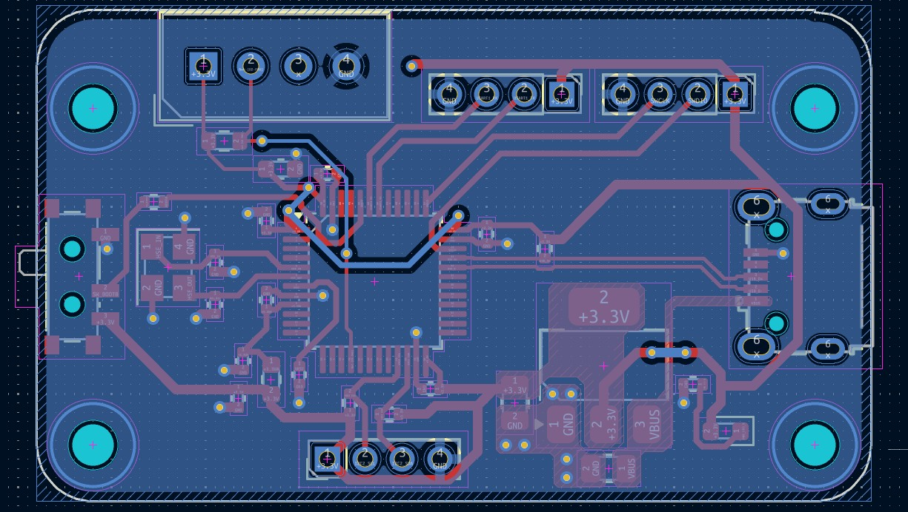

STM32F103C8T6 Blue Pill – DHT11 Temperature & Humidity Sensor

3D Project View

PCB Layout View
1. Project Overview
This project uses the STM32F103C8T6 Blue Pill microcontroller to interface with the DHT11 temperature and humidity sensor. The goal was to build a simple, low‑cost, real‑time environmental monitoring system using STM32 bare‑metal programming and digital sensor communication.
The system reads temperature and humidity values from the DHT11 sensor, processes the data on the STM32, and outputs the results through serial communication for logging or visualization.
2. Hardware Components
- STM32F103C8T6 Blue Pill: ARM Cortex‑M3 microcontroller
- DHT11 Sensor: Digital temperature & humidity sensor
- 3.3V regulated power supply
- GPIO pin for single‑wire DHT11 communication
- USB‑to‑UART interface for serial output
- Pull‑up resistor for stable data line communication
3. Firmware & Signal Processing
The firmware implements the DHT11 single‑wire protocol using STM32 GPIO timing:
- Start signal generation from STM32
- Precise microsecond‑level timing using SysTick
- Reading 40‑bit DHT11 data frame
- Extracting temperature and humidity values
- Error checking and checksum validation
- Serial output via UART for monitoring
This project demonstrates low‑level timing control, digital communication, and embedded firmware development on ARM Cortex‑M microcontrollers.
4. Applications
- Home temperature & humidity monitoring
- Weather stations
- IoT environmental sensing nodes
- Educational embedded systems projects
- Data logging and sensor calibration experiments